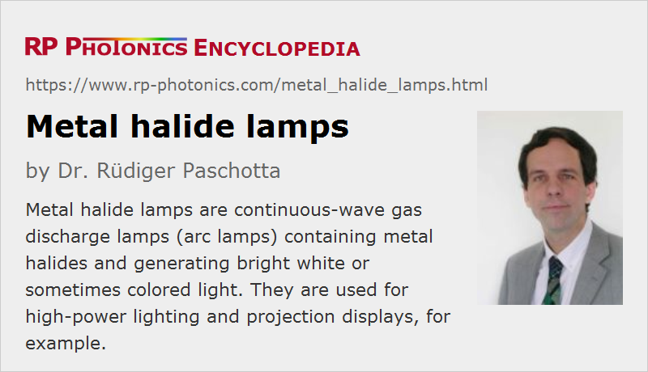

Metal Halide Lamps
Definition: gas discharge lamps containing metal halides
More general terms: metal vapor lamps, gas discharge lamps
German: Halogen-Metalldampflampen
Category: non-laser light sources
How to cite the article; suggest additional literature
Author: Dr. Rüdiger Paschotta
Metal halide lamps are high pressure arc lamps (continuous-wave gas discharge lamps) where some metal halides are used in addition to a gas filling of typically argon or xenon. One may mix a broad range of metals, and the used halogens are bromine or iodine. They can be considered as improved types of mercury vapor lamps.
Operation Principle of Metal Halide Lamps
The basic operation principle of a metal halide lamp is that of a gas discharge lamp. Due to an electric discharge, one generates a plasma, which emits light in the form of spontaneous emission after excitation of atoms or ions, e.g. by electron bombardment. There can also be a significant amount of thermal radiation.
The plasma also contains a metal vapor, which is formed by evaporation and dissociation of the added metal halides due to the high temperature of the arc. The metal atoms or ions bring specific contributions to the obtained optical spectrum and can also substantially increase the luminous efficacy and thus the energy efficiency of the lamp. Further, the used metals have an influence on the lamp impedance; alkali metals like sodium or potassium are normally used for keeping that impedance low enough.
The halogen atoms contribute little to the light emission. Their function is essentially to enable the complete evaporation of the metals and to keep the lamp envelope clear (somewhat similar as in a halogen lamp). If one would only add the metals, they would get deposited on the lamp envelope and could no more be evaporated, because the temperature of the glass could not be high enough for that. The halogens can chemically react with the metal at lower temperatures, which the glass can withstand, and thus bring them back to work in the discharge.
The plasma pressure is typically at least several atmospheres, and sometimes even several tens of atmospheres. That leads to a high power density, and implies that the arc can be relatively short. These are the characteristics of high intensity discharge (HID) lamps.
The glass envelope needs to be operated at a sufficiently high temperature. To facilitate that, particularly for low-power models one often uses an inner envelope containing the gas and metal halides, which is surrounded by an outer envelope providing some amount of thermal insulation. The outer envelope may have additional functions, such as protecting the inner envelope, and possibly filtering out ultraviolet light by absorption. For the latter purpose, the envelope glass may be doped with some UV-absorbing species. The inner lamp envelope is usually made of fused silica, being very resistant to high temperatures, and in some cases of transparent ceramics (typically aluminum oxide).
A suitable mixture of metals can be used to obtain the desired shape of the optical spectrum of the emitted light. In many cases, one desires to have broadband white light emission with a certain color temperature and a high color rendering index; in other cases, one aims at the emission of colored light, e.g. of red, orange, green or blue light. For example, lithium, potassium and rubidium contribute red light, sodium orange light, thallium green light and indium blue light.
A noble gas – normally argon or xenon – is particularly important in the startup phase, where the metal halides do not yet substantially contribute to the plasma pressure.
Metal halide lamps can be made only as arc lamps, not as flash lamps, because the evaporation of the metal halide takes some time.
Characteristics of the Light Output
The light generated by a metal halide lamp generally has the following characteristics:
- It can have a high luminous flux. For example, a 100-watt lamp may produce an output of the order of 10,000 lumen.
- The luminous efficacy of white light lamps can be comparatively high – typically around 80 to 100 lm/W, sometimes more. The same time, the color rendering index can be very high, making those lamps suitable for applications where that aspect is critical (e.g. producing videos).
- The light is generated in a relatively small volume, which together with the high radiant flux leads to a high radiance (e.g. compared with a long-arc lamp). Therefore, it can be reasonably well sent to a certain direction (e.g. in a searchlight) or focused, although by far not as well as for a laser source.
UV Emission
A significant part of the emitted light is in the ultraviolet region. That the may be harmful not only to persons, but also lead to degradation e.g. of nearby plastic materials.
Where UV emission is unwanted, it can be filtered out, e.g. by using a lamp envelope made of doped UV-absorbing glass or with an additional protection glass.
Mercury Content
Metal halide lamps often also contain a significant amount of mercury, which constitutes a health and environmental hazard. Ideally, a lamp will be properly disposed after end of its life, i.e., its envelope is broken in a facility where the escaping mercury is contained. However, some of those lamps break or explode during operation, often releasing the mercury vapor next to persons, and even if the lamp envelope remains intact, proper disposal is unfortunately not always guaranteed.
Therefore, manufacturers are more and more trying to at least minimize the mercury content; government regulations also more and more enforce such developments. Mercury minimization or elimination is particularly important for consumer lamps (e.g. for home video beamers), where the risk of inappropriate disposal due to a lack of knowledge is higher than in commercial applications. Automotive xenon headlamps, which are actually also metal halide lamps, can nowadays be completely mercury-free. Compared with many other metal halide lamps, they use only a small amount of halides (used mainly for lowering the color temperature) and generate more light from xenon.
Of course, mercury is not the only problematic material which may be used in a metal halide lamp; for example, thallium is also quite poisonous, but at least does not have such a high vapor pressure, leading to increased inhalation.
Startup Behavior
After switching on a metal halide lamp, it needs some warm-up time (typically few minutes) until the full luminous flux and the final color temperature are achieved. Directly after triggering the gas discharge, most of the metal halides is not yet in the gas (or plasma) phase; they need to be evaporated and associated by the high temperature of the arc, which initially occurs mainly in the noble gas (argon or xenon). The mercury, having a relatively low boiling point, evaporates first, followed by the other constituents. The plasma pressure rises significantly during the warm-up time. Due to the evolving lamp pressure and chemical composition, the color tone can change substantially during the startup phase.
Many such lamps need some significant cool-down time after being switched off before they can be started again. This is because the trigger voltage is substantially higher when the pressure in the hot lamp is high. That behavior can be a problem in some applications, for example for automotive headlamps, but can be avoided or mitigated with design optimizations and suitable trigger circuits.
Lamp Power Supply
As for various other types of gas discharge lamps, for a metal halide lamps one requires a special lamp power supply, providing a well stabilized DC current and the required triggering features. Alternatively, one may apply a high-frequency AC current, often with a rectangular voltage profile to avoid any interruptions of the discharge.
Modern power supplies, based on high frequency switching electronics, can provide accurate current stabilization with low noise and optimized startup operation. That can contribute to a long lamp lifetime. They can also work with minimum power losses, thus allowing for an effective high luminous efficacy. Further, they can be substantially more compact than old-style solutions, involving large transformers and inductors.
Lamp Lifetime; End of Life
In some relatively rare cases, the lamp life ends with an explosion of the lamp envelope, which may become brittle due to the harsh operation conditions, so that it can no longer withstand the high internal pressure. In other cases, the voltage for maintaining the arc becomes too high. That frequently leads to a cycling behavior: the lamp would initially start, but soon stops operating when the gas pressure gets too high. Rather than trying to start the lamp again and again, the power supply should “give up” after a few attempts.
As explained above, such lamps should be properly disposed, at least if they contain mercury or other poisonous metals – which should be assumed in case of doubt. Also, they should be handled with care, avoiding to break them, which would allow mercury to escape.
Under good conditions (infrequent switching, high-quality power supply, proper mounting without much mechanical stress, etc.), some high-quality lamps can reach quite long lifetimes of the order of 10,000 hours. However, much shorter lifetimes of e.g. only a few hundred hours are achieved for lamps which are optimized for particularly high power densities.
Applications of Metal Halide Lamps
Due to the like characteristics as explained above, metal halide lamps are suitable for the following types of applications:
- They are widely used for high-power lighting (illumination), e.g. in sports arenas, theaters, parking spaces and for indoor plant growth. Here, the high luminous efficacy and the comparatively long lifetime are important.
- The high brightness and high color rendering index makes these lamps also quite suitable for color-critical applications like the illumination of arts and the generation of videos.
- Colored versions may be used in theaters, TV shows etc.
- Due to the small emitting volume, these lamps are suitable for generating directed light, e.g. for searchlights and for projection displays. They are widely used in cinema projectors, where they are often operated with many kilowatts of electrical power, but also in small home video beamers.
- Some high-value cars have “xenon lamps”, which are actually metal halide lamps (nowadays usually mercury-free). Such automotive headlamps offer superior road illumination, but also unfortunately to increase glaring effects for other drivers.
Suppliers
The RP Photonics Buyer's Guide contains 6 suppliers for metal halide lamps.
Questions and Comments from Users
Here you can submit questions and comments. As far as they get accepted by the author, they will appear above this paragraph together with the author’s answer. The author will decide on acceptance based on certain criteria. Essentially, the issue must be of sufficiently broad interest.
Please do not enter personal data here; we would otherwise delete it soon. (See also our privacy declaration.) If you wish to receive personal feedback or consultancy from the author, please contact him e.g. via e-mail.
By submitting the information, you give your consent to the potential publication of your inputs on our website according to our rules. (If you later retract your consent, we will delete those inputs.) As your inputs are first reviewed by the author, they may be published with some delay.
See also: gas discharge lamps, mercury vapor lamps, arc lamps, metal vapor lamps, high intensity discharge lamps
and other articles in the category non-laser light sources
|  |
If you like this page, please share the link with your friends and colleagues, e.g. via social media:
These sharing buttons are implemented in a privacy-friendly way!